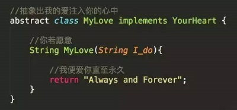
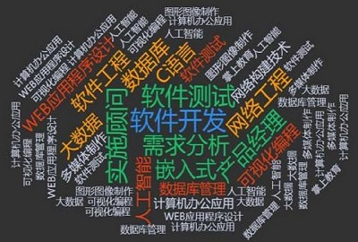

软件工程相关文章推送
软件工程趣味知识
-
三行情书代码
 -
软件工程开发的各个阶段
 -
只有程序员才能看懂的冷笑话
-
996 007 ICU
软件工程涉及到的软件
-
IntelliJ IDEA
-

- Eclipse 是一个开放源代码的、基于Java的可扩展开发平台。就其本身而言，它只是一个框架和一组服务， 用于通过插件组件构建开发环境。幸运的是，Eclipse 附带了一个标准的插件集，包括Java开发工具 （Java Development Kit，JDK）。 尽管 Eclipse 是使用Java语言开发的，但它的用途并不限于 Java 语言； 例如，支持诸如C/C++、COBOL、PHP等编程语言的插件已经可用.
Eclipse
-

-
生命周期软件设计方案——Enterprise Architect是以目标为导向的软件系统。
Enterprise Architect 是Sparx Systems 公司的旗舰产品。它覆盖了系统开发的整个周期，除了开发类模型之外， 还包括事务进程分析，使用案例需求，动态模型，组件和布局，系统管理，非功能需求，用户界面设计，测试和维护等。
Enterprise Architect
Microsoft Visual Studio
软件工程简介
软件工程是每一位从事软件行业的人都需要了解的内容, 软件生产想要摆脱对个体的依赖, 则必须遵循一定的软件工程思想, 设法提高软件的生产率和软件质量.
随着软件工程学科的发展, 人们对计算机软件的认识逐渐深入, 软件工作的范围不仅仅是局限在程序编写, 而是扩展到了整个软件生命周期, 如软件基本概念的形成丶需求分析丶设计丶 实现 丶 测试丶安装部署丶运行维护, 直到软件被更新和替换新的版本.
软件工程还包括很多技术性的管理工作, 例如过程管理, 产品管理, 资源管理和质量管理, 在这些方面也逐步地建立起了标准或规范.